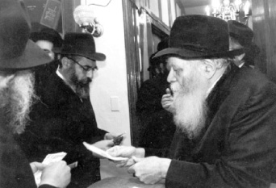

Spreading Chassidus Until the Coming of Moshiach
R’ Motti (Mordechai ben Rochel) Gal has a Chabad house and is a shliach of the Rebbe in Ramat Gan for nearly three decades. He was always unique in his approach and his way of thinking. He has always sought to break out of a limited, exile type of thinking. * In an interview with Beis Moshiach, betw

It’s hard to speak with Rabbi Motti Oliver-Gal, because between chemotherapy treatments he is busy with his U’faratzta activities, spreading the wellsprings of Chassidus, as well as activities to hasten the Geula. Since he discovered his life-threatening illness, he has felt the importance of utilizing time well, knowing that every minute he has is a gift from above and he needs to use it to convey the Rebbe’s messages.
I know R’ Gal since I started davening in the Chabad shul in Ramat Gan sixteen years ago. He officially bears the title “shliach of the Rebbe and director of the Chabad house in Ramat Gan,” but not many know that his achievements in life can fill books – vision, ideas, initiatives that strive for the heavens, are his field. He is the kind of person with far-reaching vision. This is what he constantly speaks about to those who want to hear what he has to say (and there are many), to stop thinking in a limited, galus fashion. The saying “to conquer the world” is not merely a slogan to him. He lives with the consciousness that in our day, it is closer than ever. We have endless opportunities and we just don’t do enough to make it happen. “The Rebbe paved the way and now we need to harvest the fruit of his labors, and not enough is being done,” he says sadly, even frustrated.
R’ Gal was born to Bulgarian parents who made aliya at age 17 on a rickety boat. They were idealistic and they intended on settling the land. This was in 1948. They went to Kibbutz Ashmora near the Sea of Galilee. Their wedding was held on a farm and the chuppa was held up by four rifles.
His father, Yosef, became disillusioned by kibbutz life and moved to Yaffo where he began working in construction. He brought his parents and in-laws and all their children to Eretz Yisroel. He later opened a shoe factory called Oliver.
Mordechai Oliver (later Gal) was born in Teves 5712. He lived on Baal Shem Tov boulevard on the corner of HaRav HaMaggid of Mezritch and R’ Shneur Zalman of Chabad.
“As a child, I always said that I’m on Rechov HaMaggid, corner of Shneur Zalman,” said R’ Gal smiling. When he was four, his family moved to Tel Giborim in Cholon where there had been a strong stand of the pioneers during the War of Independence as they faced the murderous attack of Arabs who came from Yaffo.
The neighborhood he grew up in was a neighborhood of immigrants. The veteran resident among them had lived in Eretz Yisroel a mere four years. While parents found it hard to adjust, their children went to school, learned Hebrew, and quickly acclimated. This eroded the authority of the parents.
“Parents did not know the language and couldn’t even help with simple homework. All of them were struggling to make a living, but we grew up very happily. There was a wonderful atmosphere of camaraderie on our street.”
R’ Gal also remembers the screams that could be heard nightly. These were Holocaust survivors who relived the terrors of the war in their sleep.
“There were Holocaust survivors with a dead look in their eyes. I remember that I was once going up the stairs of a store when a woman began screaming, ‘Kapo!’ and ran with nails outstretched towards an old man.”
Motti finished elementary school and went to high school. “I was an average student when it came to effort, but was outstanding in my achievements. None of us put in much effort into our matriculation tests, but we all passed.”
His father, who was becoming financially stable, could allow himself time for his various hobbies including classical music on a high level.
“I remember listening to music with my father at the age of six or seven. After we listened, he would analyze what he heard with astonishing subtlety as he differentiated between various performances, interpretations and meters. I also became interested in classical music and not only because he wanted it.”
Since Motti suffered from asthma, he was given a low rating by the army. However, this was a few years after the Six Day War.
“My father wanted to protect me and he took me to Tel HaShomer hospital to the amputee ward so I would see the soldiers and be scared off, but it spurred me on.”
A medical committee was convened, led by Dr. Oliver, Motti’s uncle, and he was given a high rating. He proceeded to join the Golani brigade. It wasn’t easy to break into the tight knit unit, but Motti made it and excelled, successfully completing an officers’ course. He had a number of interesting adventures in the army.
“We went to set an ambush in Syria. We had information about terrorists that were going to operate in the area and we wanted to catch them while still in Syrian territory. It was three or four in the morning. We were lying in a structure called a ‘Kochav,’ with five in the front and two covering the back. I was the assistant commander. At a certain point we were discovered and the Syrian soldiers sent up flares. The commander flew into a panic and couldn’t lead. He began screaming hysterically and I slapped him in the face to bring him back to his senses. I then immediately took command. We managed to kill two terrorists out of the four who were there. Back at company headquarters they made me into a hero and a symbol to encourage people to volunteer for service in Golani.
“On another occasion I was in Gaza. It was 1971 and we were there in order to capture the founders of the terrorist infrastructure in the Strip, with the senior figure being Abu Nimar along with Mohammad Yousef Sida’i. At a certain point they realized that someone in their ranks was informing. They found him and told him that his end was near. He came to us in the middle of the night to tell us of this. I immediately reported to the commander of the unit, Chido Abraham a”h and he told us to set a trap for the terrorists called a “straw widow.” This was a strategy in which we entered the house of the collaborator in order to stay with him until they would come to kill him. He lived in the center of the Jibala refugee camp which was known as one of the most dangerous camps.
“At six in the morning a car stopped near his house out of which came three guys who called to him to come out. Of course he didn’t go and we got ready for action. I still remember the hand that opened the doorknob of the house and the person saying, ‘Ibrahim, come out.’ When the terrorist opened the door, he was shocked to see me, a 19 year old kid in IDF uniform, aiming my weapon at him and ordering him to raise his hands. He tried to resist and I shot him. Chaos ensued and we needed help to get out because of the mob that surrounded us. We managed to take the wounded man with us and he underwent interrogation, in which he told everything we needed to know about the terrorist infrastructure in the camp. Ariel Sharon conducted some of the interrogation.”
MEETING THE MOVERS AND SHAKERS
After completing an officers’ course with high marks, Motti went back to Troop 51 in Golani. He finished the army in Shevat 5733 with the rank of Company Commander.
After his release, he took a training course in security and bodyguard work, and was sent to the airport in Lud and later to the Israeli embassy in London, but then the Yom Kippur War began. Gal returned home and was sent to the southern front.
“We bore the brunt of things there. Our recon unit was on the front line and we sustained many losses.” He served for half a year in Sharon’s unit and returned from there broken in spirit.
“At age 21, I went to console several dozen families whose loved ones, young men and good friends of mine, had been killed. I told the families precisely where their children had been killed and what happened. I was suffering from grief overload.”
After the war, he returned to security work in Israel’s embassies.
“They asked me where I wanted to go. I told them I wanted to go far away. They offered the embassy in either Buenos Aires or Seoul. Since I knew a little Spanish from home, I picked Argentina. At that time they asked me to change my last name Oliver, which they considered ‘not Israeli,’ for something else. I told them I would pick the shortest name: Gal.”
This was 5734-5 and Motti went to provide security for the Israeli consular staff in Argentina. Argentina was full of escaped Nazi war criminals. It was also suffering from an annual inflation of 9000%. With a salary of $400 a month, he enjoyed servants, a sports car and a high standard of living. He felt on top of the world. But boredom quickly set in. He wanted to study film and television, another field which his father had introduced to him. He applied to New York University, where few were accepted.
He was accepted and he left Argentina for New York, where he went to school and supported himself by being a security guard for the Israeli economic delegation to the United Nations. Every night, from one until nine in the morning, he was on guard and then he went to school.
He excelled in his studies and successfully completed this highly regarded film program. It was there that he met his wife-to-be Malka. In 5738 he completed his degree and he had to do a final project.
“Then, something interesting happened. Avital Sharansky came to New York to raise awareness about her husband, Russian refusenik (Anatoly) Sharansky. I thought this would be my golden opportunity to make a film for my project. I got a sum of money from someone by the name of Jerry Stern, a wealthy Zionist who loved the idea of a boy from Yaffo working at night to pay for his schooling who wanted to complete his course work with such a Zionist and human interest project. I worked on the film with Naftali Larish, today a successful cinematographer in the US.
“For a year and a half, we went around with Avital Sharansky on her quest to have her husband released. We went everywhere with her, to Congress, the Senate, the Pentagon, the homes of wealthy people in Hollywood, and wives of members of Congress. We filmed her visit to the home of Vice President Walter Mondale. She managed to attend every influential event. She had an incredible ability to generate sympathy for her cause.
“When I recall that time, I know that many Jewish feelings were stirred up in me, which played an important role in my beginning to think about what it means to be Jewish. I was a young guy with hair down to my shoulders, with an artistic soul; I lived in a loft in downtown Manhattan.
“I remember that the peak of our filming was when we sent a Russian crew with a hidden camera to photograph Anatoly’s trial that took place in Russia. That was a dangerous escapade. Anatoly was sentenced to thirteen years in jail. Afterward, we parted ways with Avital.”
How do you sum up that journey?
“Mrs. Sharansky was a reserved person. She did not share her thought processes with me. She had a defined goal and we served her purpose.
“As for me, what happened was that I saw the faces of all the world’s big shots up close and I saw them from a different perspective than you see from a distance. When my friend Avi Piamenta brought me to the Rebbe for the first time, I saw a face that was not of this world.”
SEEING THE REBBE FOR THE FIRST TIME
“It was the summer of 1978. I saw the Rebbe for the first time at Maariv. The Rebbe came out of his room, stood in the small zal, and put on his gartel. I looked at him from up close and saw a noble face. The Rebbe’s gaze was engraved very deeply within me. The Rebbe looked at me and moved on. But to me, it was something that made an enormous impression on me.”
How do you explain it?
“Something happened and apparently, I was ready for it. My neshama was ready for this encounter and when it happened, it had a dramatic effect on me. I later read about what an impact the first yechidus has on a person for his entire life. I guess that was my first yechidus.
“Then began a most interesting process in which I began to yearn for the Rebbe. I would go to Washington to shoot follow-up footage and I missed him. Two guys from 770 began keeping in touch with me, R’ Amitai Yemini and Yoske Levin. I was taking an interest in Judaism. I had always felt respect for Judaism, but I didn’t know what it was; I had no idea.
“Then I wrote a letter to the Rebbe. I had been offered an enticing job to move to the west coast and work with a famous movie producer who loved my life story, the Israeli hero etc. A lot of money was involved. In my long letter I wrote that I did not understand what was happening to me, that I had never been connected to Judaism, but I was feeling a gap between my work as a film producer and what I was reading in the Rebbe’s teachings. I also wrote that my involvement in Judaism could make my parents panic. I added that my career and my entire world at this stage of my life was film and television and this was the direction I wanted to develop in my life.
“At seven o’clock the next morning I received a phone call. The Rebbe had written a response on my letter: A career in film is not at all suited to Judaism and to modesty in particular. As for my parents, the Rebbe wrote: Tell the truth, you returned to Avrohom, Yitzchok and Yaakov, Dovid and Shlomo and obviously to the Exodus from Egypt and Maamad Har Sinai. As for parnasa, the Rebbe wrote: Yogaata yegi’a kala (with three lines under the word ‘kala’) u’matzasa! (With a little effort you will be successful).
“It was like a bomb exploding. First of all, I was very angry at the Rebbe. How dare he tell me that a career in film was not at all suited to Judaism? I was flooded by various emotions, because on the one hand I was new to things and couldn’t just accept what the Rebbe said. On the other hand, I was already a bit of a mekabel. I felt great love for the Rebbe and tremendous admiration and respect. I had read a lot about the Rebbe and Chassidus.
“I went to R’ Yoel Kahn to consult with him. This was no simple dilemma. $25,000 a month was at stake.
“If that wasn’t enough, the bachurim in 770 wanted to separate me from my girlfriend whom they sent to Machon Chana while I went to Hadar Ha’Torah. I was very confused. Suddenly, someone had come and messed up the life I had set up for myself and yet, I felt that the Rebbe was protecting me.
“In yeshiva, I began learning Torah and Chassidus. I put on a kippa and let my beard grow. Word got back to my parents and they freaked out. They couldn’t understand how I could have gotten involved in Judaism, something foreign to them. My friend told them that either I had been brainwashed or I was on drugs. He advised them to go and rescue me as soon as possible. They took the first plane out.
“At this time, Avi Piamenta planned on learning in a Litvishe yeshiva while I was becoming a Lubavitcher. I traveled to him and told him that he wasn’t going to learn anywhere but by the Rebbe. He came back to Crown Heights and we were the nucleus of the Israeli program at Hadar Ha’Torah. Our group included: Avi, Alon Kaiser, Sharon Harel, Avrohom Sasson, and others. We were about ten Israelis there.”
Had you calmed down in the meantime?
No, definitely not! Throughout the transition process, along with enormous concessions that I made in my life, I was experiencing inner turmoil.
“My parents arrived. At our first meeting they realized that something had happened to me. When my father asked me what was going on, I quoted the Rebbe without adding any explanations: I returned to Avrohom, Yitzchok and Yaakov, Dovid and Shlomo and obviously to the Exodus from Egypt and Maamad Har Sinai, and I laughed. I told them that this is what the Rebbe told me to say and I had nothing to add. I felt that the Rebbe’s words would be persuasive enough.
“They spent twenty days in Crown Heights with R’ Yoel Kahn and his wife who hosted them with utmost sensitivity. They did not force them to wash their hands or wear a kippa. On their own they went to davening at 770. This was my father’s first t’filla in his life. He later told me, ‘When we came and looked at you, I could see that you were happy and at peace with your new path.’
“When I opened a Chabad house in Ramat Gan, my father worked there for fourteen years as a volunteer. He once said to me that when he got his first look at the Rebbe, he realized that as parents they had merited something great, but he only said this at the end of his life.”
YOU WILL BE AT THE PEAK
In the meantime, his future wife Malka was studying at Machon Chana while Motti was learning in Hadar Ha’Torah by R’ Avrohom Drizin and the mashgiach, R’ Goldberg. He also filled in gaps in his knowledge by learning privately with R’ Yoel Kahn. They would meet at R’ Yoel’s house and learn Chassidus.
This period extended from Elul 5738 until the summer of 5739 and then Motti returned to Eretz Yisroel and married Malka on 12 Av. They lived in Kfar Chabad in the new development, while Motti learned in kollel and with R’ Yitzchok Ginsbourg.
“That year I grew to love learning. I watched R’ Ginsbourg as he learned and it made a tremendous impression on me to see someone devoted to learning with such intensity. He is an independent thinker with fantastic and very impressive capabilities.”
R’ Gal began his Lubavitch askanus in hafatzas ha’maayanos. Together with R’ Meir Friedman a”h, director of Tzach in Kfar Chabad, he put a lot of work into a Chassidus exhibit in Kfar Chabad. R’ Yochanan Gurary provided the historical guidance for the exhibit which was going to be housed on the second floor of Beit Shazar, but “because of a little politics,” as he put it, the exhibit never ended up happening.
“I was terribly brokenhearted over it. The one who was mainly hurt was Meir Friedman who worked on the exhibition for such a long time and raised a lot of money for it.”
When the Rebbe announced the “Letter in a Seifer Torah” campaign, R’ Gal was picked by the Beis Din Rabbanei Chabad – which the Rebbe said was responsible for this – to run the campaign. Motti, as he is wont to do, went “big.” He traveled with R’ Zushe Wilyamowsky to set up branches. They set up booths on the street to sign people up and they got Lubavitchers excited about going out to register children.
“The Rebbe himself initiated, led and planned the campaign. Nearly every day I would be questioned by R’ Leibel Groner: how many were registered, how is the designing of the certificate coming along, and daily reports. I have not seen another mivtza of the Rebbe in which the Rebbe himself was so involved.”
When the campaign got off the ground and was being run in an organized way by the committee appointed for that purpose, R’ Gal returned to ordinary life and began to ponder a shlichus position. This was in 5744-5. He was made a few shlichus offers and he wrote them all to the Rebbe. The Rebbe marked Ramat Gan-Givatayim and that became his place of shlichus.
There already was a Chabad shul there, the legendary one on Rechov Uziel, and R’ Gal gave it a shot in the arm. He began being mekarev young residents of Ramat Gan who came to the shul and helped expand the existing k’hilla which was led by the mashpia, R’ Meir Blizinsky. The gabbai of the shul, R’ Mordechai Gruzman, enjoyed the infusion of fresh blood in the form of twenty or so new sirtuks who joined the shul in a relatively short period of time.
“I began arranging activities and shiurim with the focus on Tanya classes for men and women. In a yechidus that I had in 5739 along with my wife, the Rebbe told me that spreading Judaism and especially Chassidus was my mission.”
R’ Gal had a number of private audiences with the Rebbe. You can still see the awe and emotion on Rabbi Gal’s face as he recalls his first yechidus with the Rebbe.
“The first time I had yechidus, I heard the Rebbe and saw how he looked at the world differently, as territory that needed to be infused with k’dusha.
“It was a relatively long yechidus with the Rebbe sitting by a desk piled with letters. When I entered the room the Rebbe looked up at me and smiled. His face lit up and he said in Lashon HaKodesh: ‘Hashem will surely fulfill all the requests of your heart for good and for blessing. You should disseminate Yiddishkait in the world, especially Chassidus, until the coming of Moshiach Tzidkeinu, soon in our days, mamash.’
“When I left, I trembled for the next two and a half hours. It was the ultimate experience, the ultimate level of purity. It was very purifying.”
He had additional private audiences in 5740 and 5741.
“They were always very moving. I always left them crying and very emotional. The feeling in yechidus was of something very pure and refined that is hard for me to put into words. Maybe this feeling is what Chassidus calls the revelation of the yechida.”
SPECIAL SHLICHUS TO THE PRIME MINISTER
In issue 785 of Beis Moshiach there was an article about R’ Gal concerning the events of Pesach 5750 or as it was called then, “ha’targil ha’masriach” (lit. stinking scheme, or the dirty trick). Shimon Peres and the Labor government colluded with Shas to cause the fall of the Shamir government. Peres also turned to Agudath Israel and invited it to join a new narrow coalition under his leadership. R’ Gal felt that an umbrella organization of the Chabad movement was using the Rebbe’s name for their own purposes and against the Rebbe’s explicit position. Although he was a local shliach and not an askan operating on a national level, and was certainly not involved in politics, he felt he had to get involved.
“On Motzaei Shabbos I began calling rabbanim who told me not to get involved. The only one who ‘broke’ was R’ Dovid Chanzin who, after a lengthy conversation, blessed me.”
He went to various people to exert pressure on them to torpedo the attempt to form a Labor government. He met with key political figures numerous times, including Prime Minister Yitzhak Shamir.
He was not authorized to speak on anyone’s behalf, certainly not on behalf of any organization. He was just a private person, a Lubavitcher Chassid, who was conveying the Rebbe’s views.
“I began working with Shamir and Sharon. I showed them sichos of the Rebbe with his position on shleimus ha’aretz. I reported constantly to R’ Groner, the Rebbe’s secretary, but he heard the badmouthing against me, that said I was working on my own in opposition to the position of Chabad.
“In the end, the plot was foiled and Shamir remained in government as the Rebbe wanted. Throughout this ordeal, I went to the Rebbe several times with secret messages from Shamir, but there were people who ruined the shlichus. When the whole thing was over, Shamir sent a letter of thanks to the Rebbe, sealed with the wax seal of the prime minister’s office. I brought the letter to R’ Groner who submitted it to the Rebbe. He told me afterward that the Rebbe said to convey: ‘You prevented me from having tremendous aggravation and caused me to be greatly pleased.’ That was the greatest gift I ever got from the Rebbe.”
Chol HaMoed Pesach, a few days after the Rebbe’s birthday, R’ Gal said to Shamir, “I want to take a letter from you to the Rebbe.”
Shamir wrote to the Rebbe, without a secretary, in his own handwriting, as a Chassid writes to the Rebbe.
That day, R’ Gal left for 770. When he arrived, he gave the letter to the Rebbe’s secretary, R’ Groner.
“Shortly afterward, R’ Groner called me at the place where I was staying and said that I should come to 770 right away to get a response for Shamir. When I got there, I was given an envelope and told to personally give it to the prime minister.
“I know that the Rebbe saw all that I had gone through and in a very sensitive manner, he wanted to repay me for my efforts.
“The reward was that I was able to be the shliach from Shamir to the Rebbe and then from the Rebbe to Shamir.
“After this episode, the Rebbe’s blessings to me were along the lines of starting to work with Jewish leaders. He also encouraged me to work on a much larger scale.”
GEULA PROJECTS
At this stage of his life, R’ Gal went back to his old hobby, films and producing, this time in the service of Torah and Geula. He and his good friend and film producer, Shuki Ben Porat began to develop some projects for the religious audience.
In 5751, when the Rebbe made a big commotion about Geula, R’ Gal took it one step further.
“We did a media campaign to announce the Rebbe’s b’sura. We went to all the television and radio stations and newspapers. It was an exciting time.
“I looked for what the Jewish people were lacking in order to see what I could contribute.”
He and Shuki Ben Porat decided to produce a film aimed at bar mitzva age boys. “It was an attempt to extend a hand to the non-religious community, showing them that an encounter with a religious person is not all that bad.” This project took two years.
Gimmel Tammuz 5754 halted their work. In 5755, Motti’s good friend Rami Antian a”h, a man of broad vision himself, told him he wanted to do a broadcast that would be shown on Yud Shevat.
“Chabad was in an uproar since Gimmel Tammuz. Rami suggested I come to the US and work on this broadcast. The goal was to focus on all the inyanim of the Rebbe in connection to Moshiach and Geula through a satellite broadcast covering six continents, in which each place would accept the Rebbe’s malchus.
“A week to prepare for a project like this is nothing. I didn’t sleep that week. We examined all the places where the Rebbe talks about Moshiach. I decided not to focus on miracles but on the Rebbe’s demand for Geula. It’s a miracle that we were successful. The fact that six continents were on the screen simultaneously and the lines didn’t fall is a miracle from Heaven. Even with a million dollar budget you couldn’t pull it off under natural circumstances. The broadcast inspired thousands of Chabad Chassidim around the world and charged them up with anticipation for the hisgalus of the Rebbe.”
Following this success, R’ Gal began producing the Moshiach Congress, an idea he came up with. As is his wont, he brought in public relations experts, trend setters and strategists. He invited shluchim from all over the world to attend the Congress. He made a clip on Geula and Moshiach for the purpose of directing the world to a better place. It was marketed in ten languages including Arabic, German, Chinese, and Japanese with a call for the observance of the Seven Noachide Laws.
At the Moshiach Congress, the “Million Dollar Fund” was announced as a means to fund Geula projects.
“Rami felt that it was his role to hold aloft the flag of Geula and not to allow the Rebbe’s inyanim to fall by the wayside.
“Sadly, it all ended almost overnight.”
Rami lost his money and moved to Eretz Yisroel where he began learning in the kollel that R’ Gal opened.
“Rami was focused on his goal. Sometimes, he would wake me up in the middle of the night with questions in learning. It was the same sort of intensity he had used in business. He died suddenly of a heart attack. He was born on 3 Tammuz and he died on Simchas Torah. I miss him very much. He was a real chavrusa.”
PROJECT AFTER PROJECT
R’ Gal went back to his shiurim and Chabad house and to the movies he produced. This time it was a series of videos called Chaburat Ha’Geula which were aimed at the frum crowd, all with messages of Geula. They were quality films and were very successful.
In 5760, R’ Gal opened Beis Maasim Tovim in Ramat Gan, an enormous chesed operation which distributes food, provides help for children, etc. There is also a soup kitchen.
He started an organization called Yehuda V’Yisroel which is aimed at thousands of gifted, creative, artistic children who are exposed, for the first time, to Jewish messages of goodness, light, Ahavas Yisroel, Achdus, and mutual responsibility. About 9000 young people are members of this organization.
The Chabad house in Ramat Gan has expanded. Five more shluchim have joined the team and work in various neighborhoods in the city.
Midreshet Hisorerus was started for women and girls and is run by R’ Gal’s daughter. Dozens of women and girls attend every day and participate in shiurim. Girls who were far from the world of Torah and mitzvos learn to appreciate the depth of Torah. Many of them have established Chassidic homes.
UNDER THE SWORD
It’s no secret that R’ Gal has reached a major crossroads in his life. He did not hide his illness from his family and many mekuravim. He even spoke about it at a special achdus farbrengen he held recently.
“Two months ago, I was coughing a lot during a shiur. One of the women there asked me to get checked out by a doctor. I was diagnosed as having advanced cancer. Since then, I have felt like there is a sharp sword on my neck.
“It was hard to accept, but I worked on a number of fronts: my family, my feelings about it, the community. This was while I was choosing my oncology team, having treatments abroad, etc.
“I know I am living on borrowed time and I need great mercy. It’s making me work harder. I want to accomplish many things that I’ve wanted to do but haven’t done yet. The doctors say I’m living on borrowed time even though I am full of emuna and don’t accept that, but by nature I am also a realistic person. The two souls operate simultaneously as it says in Tanya, the animal soul and the G-dly soul. I hope for the best, for a miracle, but I am undergoing difficult treatments.”
In addition to dealing with this terrible illness, R’ Gal is facing tremendous costs because of expensive treatments. Most of the treatments are taking place abroad and they cost a fortune. He calls upon Anash to make a donation to the fund he opened to save his life:
Bank Discount 11, Branch 007 Tel Ganim
# 73032
Mordechai Gal Oliver
Or mail to this address:
Gal Family
Rechov Peretz Bernstein 44
Ramat Gan
https://p9.secure.hostingprod.com/@www.charityforisrael.com/ssl/Emergency_fund.html
Menachem Ziegelboim. "Spreading Chassidus Until the Coming of Moshiach." Beis Moshiach, no. 850 (September 12, 2012).